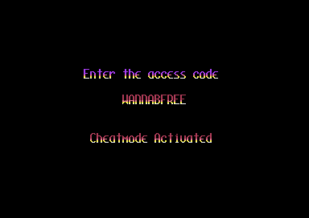
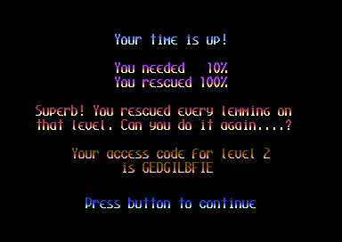

<meta charset="utf-8">
<meta name="viewport" content="width=device-width, initial-scale=1">
<title>{{title}}</title>
<link rel="preconnect" href="https://fonts.googleapis.com">
<link rel="stylesheet" href="https://fonts.googleapis.com/css2?family=Lato:wght@400;700;900&family=IBM+Plex+Mono:wght@400;500&display=swap">
<link rel="stylesheet" href="reference/lem-page.css">
<!-- tabs -->
<header class="hero">
  <p class="eyebrow">{{platform}} · {{year}} · {{publisher}}</p>
  <h1>{{title}}</h1>
  <p class="sub">A cheat hidden in the first level's access code, a check that stops the machine when a level file is not the one expected, and a line of text the game never shows.</p>
</header>
<main class="wrap">

<section data-part="menu">
  <p class="fig">01 · The cheat</p>
  <h2 class="t">Secret: level 1's access code turns on a cheat</h2>
  <p class="lede">Typing WANNABFREE at the title's access code prompt prints "Cheatmode Activated". After that, giving up a level counts every lemming as saved.</p>
  <div class="lm-split">
    <div class="plate"><p class="cap">The access code prompt after WANNABFREE.</p></div>
    <div class="plate"><p class="cap">A level ended at once with the back arrow, with the cheat on.</p></div>
  </div>
  <p>WANNABFREE is the access code of level 1 of Fun, the code nobody needs to type, since the game starts there anyway. The routine that looks a typed code up in the table of 100 treats a match with level 1 differently from every other (<code>find_access_code</code>, <code>$9BC4</code>): instead of choosing the level it sets bit 7 of a flag in the resident part, <a href="source-resident.html#CB61"><code>$CB61</code></a>, and prints the message.</p>
  <p data-part="game">When a level ends, the code that counts the result reads that flag (<code>$0ED3</code>, game part): with it set, the level counts as 100 % saved, whatever happened. In play, SHIFT pauses and the back arrow ends the level while paused, so with the cheat on every level can be passed in a few seconds, and its end screen then shows the next level's access code. <em>Live</em>, on the disk version on 20 October 2026: typed at the title, then level 1 started and ended at once, as the screenshots show.</p>
</section>

<section data-part="game">
  <p class="fig">02 · A trap for edited files</p>
  <h2 class="t">Secret: the briefing stops the machine when a level's code does not match</h2>
  <p class="lede">Before it draws a briefing, the game compares the access code inside the level file it has just loaded with the code it expected. If one letter differs, the border turns red and the machine stops.</p>
  <p>The menu keeps the code of the chosen level in the resident part, at <a href="source-resident.html#CB49"><code>$CB49</code></a>. After the level's files are in, <code>show_briefing</code> (<code>$526E</code>) compares its ten letters with the level's own copy. A difference turns the border red (<code>$5283</code>) and jumps to itself forever (<code>$5286</code>). Every level file carries its own access code at <code>$E005</code> in its header, so a level file edited or swapped for another one is caught here.</p>
  <p><em>Live</em>, 20 October 2026: from level 1's briefing with <code>$CB49</code> as the menu left it, the game drew the briefing and went on; with one letter of it changed, the program counter sat at <code>$5286</code> with the border red.</p>
</section>

<section data-part="menu">
  <p class="fig">03 · A line nobody sees</p>
  <h2 class="t">Secret: "HACKING AT THE END OF THE LEMNIVERSE"</h2>
  <p class="lede">Next to the code sheet's routines, at <code>$A184</code>, is a line of text in capitals that the game never prints.</p>
  <p>The text lies just before the code sheet's check at <code>$A1AC</code>, in the menu's file CB. No instruction reads it: the references search finds only the two indexed reads of the decimal weights just before it, whose index never goes past 4. It reads like a note left in the file by whoever wrote the code sheet, a pun on Douglas Adams's restaurant at the end of the universe.</p>
</section>

<section data-part="game">
  <p class="fig">04 · Rounded in advance</p>
  <h2 class="t">The number to save is worked out on the disk</h2>
  <p class="lede">A briefing prints a percentage, but the level file also stores the number of lemmings it means, already rounded up.</p>
  <p>Each header holds the percentage as text at <code>$E03D</code> for the briefing, and the number to save at <code>$E040</code>. In all 100 levels the stored number is the percentage of the lemmings rounded up: 10 % of 25 asks for 3, 83 % of 30 for 25, 95 % of 33 for 32. The end screen compares the lemmings saved with the stored number, through the header's copy at <code data-part="">$6F40</code>, to choose its message (<code>choose_message</code>, <code>$53CF</code>), so the game never works the rounding out. The <a href="levels.html">Maps / levels</a> tab lists both.</p>
</section>

<section data-part="game">
  <p class="fig">05 · Drawn and never shown</p>
  <h2 class="t">Thirty-one lemming images no animation shows</h2>
  <p class="lede">The table of lemming frames has 300 entries. Stepped as the game steps them, the 21 animations never reach 33 of them, which point at 31 images of their own.</p>
  <p>Most are the odd frames of the basher and the miner. Their animations move on two frames a pass (<code>action_frame_step</code>, <code>$1308</code>) from a counter that starts at 0 and starts again at 0, so the frames between are skipped every time, although they differ from their neighbours. Frames 189 to 195 belong to no action, and the floater's first frame is skipped because its counter has moved on before the first frame is chosen. The <a href="graphics.html">Graphics</a> tab draws all of them; its test runs the game's own frame step for every action.</p>
</section>

<section data-part="game">
  <p class="fig">06 · Left in the code</p>
  <h2 class="t">A routine nothing calls</h2>
  <p class="lede">At <code>$2910</code>, between the terrain test and the routines that dig and build, are 21 bytes of code that no instruction reaches.</p>
  <p>The routine reads a terrain pixel through <code>terrain_at</code> (<code>$28E8</code>) and shifts it down into the low bits, so that it returns the pixel's colour, 0 to 3 (<code>pixel_value_unused</code>). The references search finds no call, jump or pointer to it. <code>terrain_at</code> by itself answers whether a pixel is filled; this one would also tell one colour of terrain from another.</p>
</section>

</main>
<footer style="margin:16px 0 0;padding:22px var(--gx) 0;border-top:1px solid #e0ded8;font-family:'IBM Plex Mono',ui-monospace,Menlo,monospace;font-size:12px;color:#80838a"><a href="https://github.com/gamesexplained/gamesexplained" style="color:#1f5fa8;text-decoration:none">GitHub</a> · <a href="https://discord.gg/3V9GWyRDWV" style="color:#1f5fa8;text-decoration:none">Discord</a><br>© Games Explained contributors. Write-ups, facts and symbol maps are available under <a href="https://creativecommons.org/licenses/by-sa/4.0/" style="color:#1f5fa8;text-decoration:none">CC BY-SA 4.0</a>; code under <a href="https://opensource.org/licenses/MIT" style="color:#1f5fa8;text-decoration:none">MIT</a></footer>
